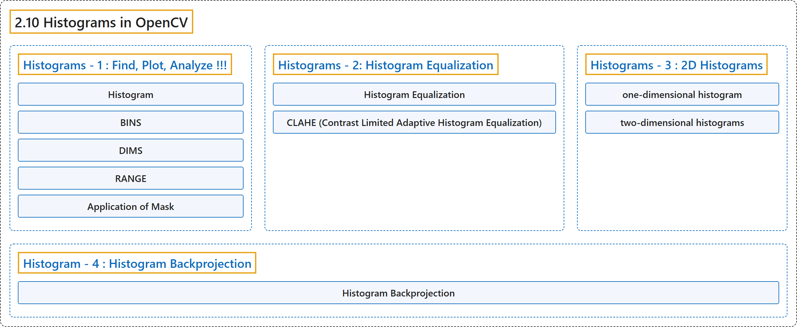

2.10 Histograms in OpenCV
Classification

Glossary
| Term | Definition | 中文翻译 | Source |
|---|---|---|---|
| 2.10 Histograms in OpenCV OpenCV 中的直方图 |
(context) "All about histograms in OpenCV" | （语境）关于 OpenCV 中直方图的一切 | OpenCV team, n.d.-f, "Image Processing in OpenCV", item 10 |
| Histograms - 1 : Find, Plot, Analyze !!! 直方图 1：计算、绘制、分析 |
(context) "Learn the basics of histograms" | （语境）学习直方图的基础 | OpenCV team, n.d.-e, "Histograms in OpenCV", item 1 |
| Histogram 直方图 |
"You can consider histogram as a graph or plot, which gives you an overall idea about the intensity distribution of an image." | 可以把直方图看作一张图或曲线，它让你对图像的强度分布有一个整体的了解。 | OpenCV team, n.d.-b, "Theory", para. 1 |
| BINS 直方柱（BINS） |
"So what you do is simply split the whole histogram to 16 sub-parts and value of each sub-part is the sum of all pixel count in it. This each sub-part is called "BIN"." | 所以你要做的只是把整个直方图分成 16 个子部分，每个子部分的值是其中所有像素数之和。每个子部分称为“BIN”。 | OpenCV team, n.d.-b, "Find Histogram", para. 3 |
| DIMS 维数（DIMS） |
"DIMS : It is the number of parameters for which we collect the data." | DIMS：它是我们为之收集数据的参数个数。 | OpenCV team, n.d.-b, "Find Histogram", para. 4 |
| RANGE 范围（RANGE） |
"RANGE : It is the range of intensity values you want to measure." | RANGE：它是你想测量的强度值的范围。 | OpenCV team, n.d.-b, "Find Histogram", para. 5 |
| Application of Mask 掩模的应用 |
"Just create a mask image with white color on the region you want to find histogram and black otherwise." | 只需创建一幅掩模图像，在想求直方图的区域为白色，其余为黑色。 | OpenCV team, n.d.-b, "Application of Mask", para. 1 |
| Histograms - 2: Histogram Equalization 直方图 2：直方图均衡化 |
(context) "Learn to Equalize Histograms to get better contrast for images" | （语境）学习均衡化直方图，让图像获得更好的对比度 | OpenCV team, n.d.-e, "Histograms in OpenCV", item 2 |
| Histogram Equalization 直方图均衡化 |
"So you need to stretch this histogram to either ends (as given in below image, from wikipedia) and that is what Histogram Equalization does (in simple words)." | 所以需要把这个直方图向两端拉伸（如下图所示，图来自维基百科），简单地说，这就是直方图均衡化所做的事。 | OpenCV team, n.d.-c, "Theory", para. 1 |
| CLAHE (Contrast Limited Adaptive Histogram Equalization) CLAHE（限制对比度自适应直方图均衡化） |
(No definition) | （无定义） | OpenCV team, n.d.-c, "CLAHE (Contrast Limited Adaptive Histogram Equalization)" |
| adaptive histogram equalization 自适应直方图均衡化 |
"So to solve this problem, adaptive histogram equalization is used. In this, image is divided into small blocks called "tiles" (tileSize is 8x8 by default in OpenCV). Then each of these blocks are histogram equalized as usual." | 为了解决这个问题，使用自适应直方图均衡化。在这种方法中，图像被分成称为“tiles”的小块（OpenCV 中 tileSize 默认为 8×8）。然后对每一块照常做直方图均衡化。 | OpenCV team, n.d.-c, "CLAHE (Contrast Limited Adaptive Histogram Equalization)", para. 3 |
| contrast limiting 对比度限制 |
"If any histogram bin is above the specified contrast limit (by default 40 in OpenCV), those pixels are clipped and distributed uniformly to other bins before applying histogram equalization." | 如果某个直方柱超过指定的对比度上限（OpenCV 中默认为 40），这些像素会在做直方图均衡化之前被裁剪并均匀分配到其他直方柱。 | OpenCV team, n.d.-c, "CLAHE (Contrast Limited Adaptive Histogram Equalization)", para. 3 |
| Histograms - 3 : 2D Histograms 直方图 3：二维直方图 |
(context) "Learn to find and plot 2D Histograms" | （语境）学习计算和绘制二维直方图 | OpenCV team, n.d.-e, "Histograms in OpenCV", item 3 |
| one-dimensional histogram 一维直方图 |
"It is called one-dimensional because we are taking only one feature into our consideration, ie grayscale intensity value of the pixel." | 它之所以称为一维，是因为我们只考虑一个特征，即像素的灰度强度值。 | OpenCV team, n.d.-d, "Introduction", para. 1 |
| two-dimensional histograms 二维直方图 |
"But in two-dimensional histograms, you consider two features." | 而在二维直方图中，要考虑两个特征。 | OpenCV team, n.d.-d, "Introduction", para. 1 |
| color histograms 颜色直方图 |
"Normally it is used for finding color histograms where two features are Hue & Saturation values of every pixel." | 通常它用于求颜色直方图，其中两个特征是每个像素的色调和饱和度值。 | OpenCV team, n.d.-d, "Introduction", para. 1 |
| Histogram - 4 : Histogram Backprojection 直方图 4：直方图反向投影 |
(context) "Learn histogram backprojection to segment colored objects" | （语境）学习用直方图反向投影分割彩色物体 | OpenCV team, n.d.-e, "Histograms in OpenCV", item 4 |
| Histogram Backprojection 直方图反向投影 |
"It is used for image segmentation or finding objects of interest in an image." | 它用于图像分割或寻找图像中感兴趣的物体。 | OpenCV team, n.d.-a, "Theory", para. 2 |
References
OpenCV team. (n.d.-a). Histogram - 4 : Histogram Backprojection. OpenCV-Python Tutorials (Version 4.13.0). Retrieved October 31, 2026, from https://docs.opencv.org/4.x/dc/df6/tutorial_py_histogram_backprojection.html
OpenCV team. (n.d.-b). Histograms - 1 : Find, Plot, Analyze !!!. OpenCV-Python Tutorials (Version 4.13.0). Retrieved October 31, 2026, from https://docs.opencv.org/4.x/d1/db7/tutorial_py_histogram_begins.html
OpenCV team. (n.d.-c). Histograms - 2: Histogram Equalization. OpenCV-Python Tutorials (Version 4.13.0). Retrieved October 31, 2026, from https://docs.opencv.org/4.x/d5/daf/tutorial_py_histogram_equalization.html
OpenCV team. (n.d.-d). Histograms - 3 : 2D Histograms. OpenCV-Python Tutorials (Version 4.13.0). Retrieved October 31, 2026, from https://docs.opencv.org/4.x/dd/d0d/tutorial_py_2d_histogram.html
OpenCV team. (n.d.-e). Histograms in OpenCV. OpenCV-Python Tutorials (Version 4.13.0). Retrieved October 31, 2026, from https://docs.opencv.org/4.x/de/db2/tutorial_py_table_of_contents_histograms.html
OpenCV team. (n.d.-f). Image Processing in OpenCV. OpenCV-Python Tutorials (Version 4.13.0). Retrieved October 31, 2026, from https://docs.opencv.org/4.x/d2/d96/tutorial_py_table_of_contents_imgproc.html